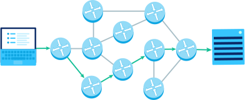

The internet is a worldwide system built of computers, networks, and servers. Everyone is able to use the internet to communicate, interact, and transmit information. It is not controlled by anyone. The system is made up of routers, redundancy, packets, and strings. What makes the system function is because of two major protocols: HTTP and DNS
.jpeg)
When using the internet to send a message, request a website, etc., your computer sends your data in broken-up pieces called packets. The packets then travel along multipe strings or pathways from router to router until it reachs its destination. The router's job is to choose the most efficient and best way the packet should travel. To make the travel possible, HTTP and DNS must work together. When requesting to visit a website, DNS translates the website into an IP address so that HTTP can find the website's server. HTTP then requests the desired web page from that server. Once the server recieves the request, it sends the data to your browser, displaying what you wanted to see.
Since the internet is used by millions of people, the internet is complexly designed. As data travels through networks of strings and routers to reach its destination, it can be a problem if a pathway or router fails. This is where redundancy comes in. Multiple pathways are made, connecting multiple routers so that if one or more pathways or routers fail, there are multiple other ways the data can travel through. Once all the packets arrive to their destination, it is reassembled to form the message, webpage, etc.
